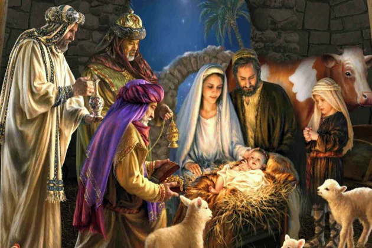

Quando ocorre o Natal e o que é celebrado?
O Natal, dia 25 de dezembro, comemora o nascimento de Jesus Cristo, a figura mais importante do Cristianismo.Por esse motivo, para os cristãos, trata-se de uma das principais datas comemorativas, ao lado da Páscoa, em que se celebra a ressurreição de Jesus.
O dia de Natal é feriado religioso em muitos locais do mundo. O chamado ciclo do Natal é celebrado durante doze dias, que compreendem o dia 25 de dezembro até o dia 6 de janeiro.
Esse período está relacionado com o tempo que os três reis magos, Baltazar, Gaspar e Melchior, levaram para chegar à Belém, cidade onde nasceu Jesus.

| Nome | Presente Ofertado | Significado do Presente | Continente Representado | Elemento da Natureza |
|---|---|---|---|---|
| Baltazar | Mirra | Mortalidade e humanidade de Jesus (resina usada em embalsamamentos) | África | Água |
| Melchior | Ouro | Realeza de Jesus (metal precioso digno de um rei) | Europa | Terra |
| Gaspar | Incenso | Divindade de Jesus (resina queimada em atos de adoração) | Ásia | Fogo |
| Segundo Registros Históricos | ||||